BASIC SETUP
PŘI INSTALACI WINSERVERU = VŽDY DESKTOP EXPERIENCE
SSH
Pro ssh (linux I win) => Ssh user@IP
SSH NA WINDOWS 11
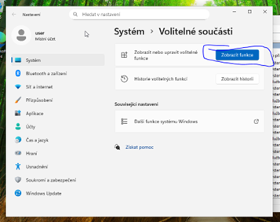
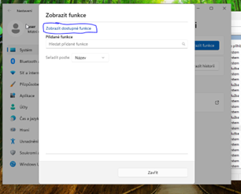
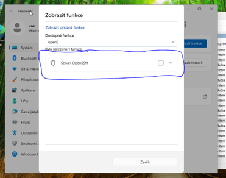
Pro automatické spouštění SSH serveru pak v services nastavit typ spouštění
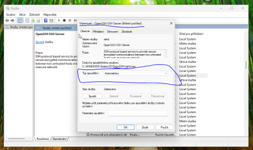
Pro fungovaní pak musíme ve firewallu vytvořit nové příchozí pravidlo (tam povolíme port 22)
SAMBA pro LINUX
Nainstalujeme sambu
POZOR => service se nejmenuje “smb” ale “smbd”!!!
Udelame v configu novou sekci (podle toho, jak nazveme sekci se pak bude jmenovat “slozka” na sdileni)
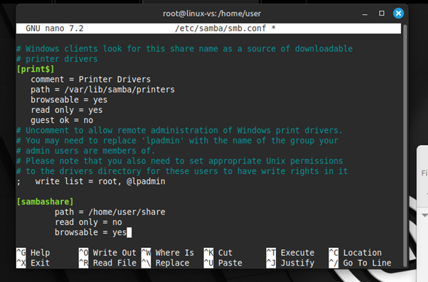
Povolime sambu na firewallu
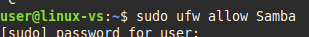
Pridame heslo pro usera na sambu
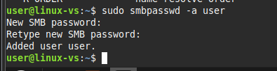
Pak se pripojime
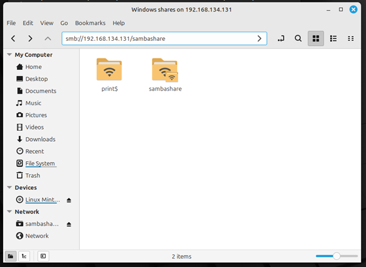
Na Windows se pak pripojime pomoci \\
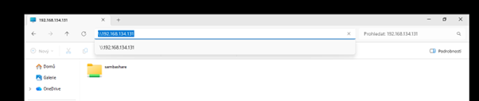
Pokud chceme sdilet slozky na Win a pripojit se z linuxu => Ve Windows nasdilime adresar a v Linuxu se pak pripojime
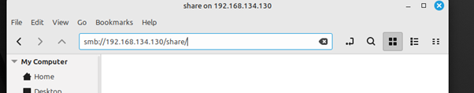
Pokud chceme W => W pak jen ve file exploreru: \\192.168.134.130\share
RDP
Windows => Windows
Povolíme RDP v nastavení
“Připojení ke vzdálené ploše” => IP
Linux => Windows
Remmina
VNC
Windows => TightVNC (klient)
Linux => VNC server - https://forums.linuxmint.com/viewtopic.php?t=418876
Tezko rict, zda tohle funguje, muj pocitac je shit a sekne se mi virtual pri pripojovani
IIS
V IIS Manageru udelame novy site
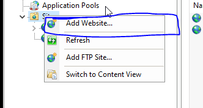
Vybereme tam site name, host name (www.priklad.com) a root folder
Pokud chceme pak stranku zobrazit na linuxu, musime do /etc/hosts pridat IP adresu + hostname
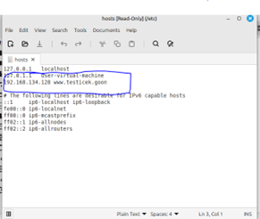
Pak uz si v prohlizeci pres http muzeme zobrazit stranku
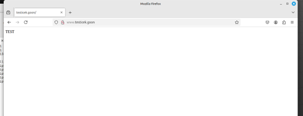
NGINX Linux
Pripojime se pres ssh na linux (ten na ktery pristupujeme vzdalene)
Apt install nginx
Ve /var/www udelame novy adresar pro root nasi stranky
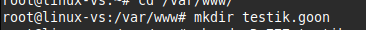
Tam pak udelame nas index
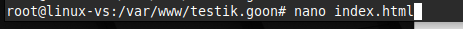
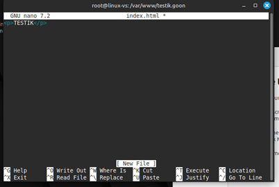
V /etc/nginx/sites-available/ udelame novy config pro nasi stranku (uz je tam default config, ktery ma vzorovou sekci, takze ji staci zkopirovat a trochu zmenit pro nase ucely)
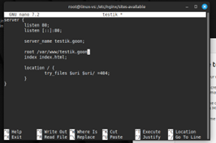
Musíme pak udělam symlink tohoto configu do sites-enabled
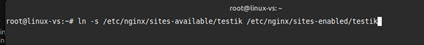
Reloadneme nginx
Pridame do hosts hostname a IP
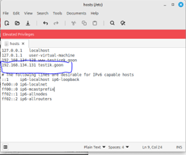
A uz nam to funguje 😛
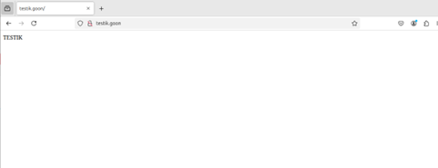
AD DS
Pri pridavani AD DS musime pridat i DNS server
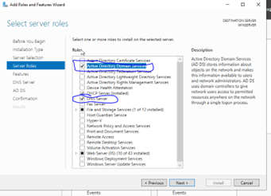
Pak musime promotnout server na domenovy kontroller
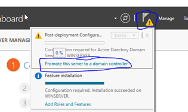
Vzhledem k tomu, ze nemame zadnou domenu jeste vytvorenou, ani forest, musime vytvorit novy forest a zvolit root domain name
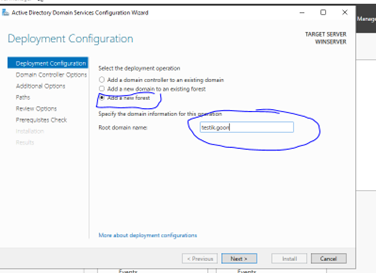
V AD Users and Computers vytvorime nove Organizational Unit (OU) tak, aby jsme meli tento strom
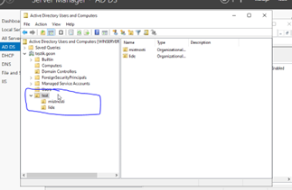
V lide pak vytvorime nejakeho uzivatele, pomoci ktereho se pak na Win11 prihlasime do domeny.
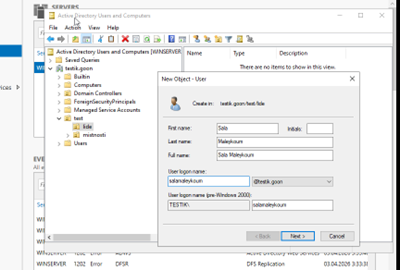
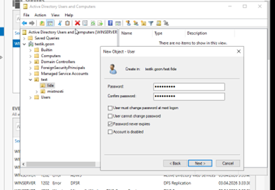
V Group Policy Management pak vytvorime novy Group Policy Object (object s pravidly)
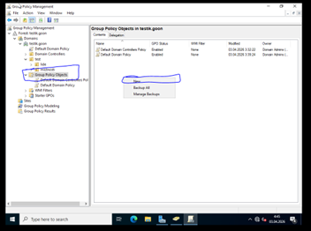
Vytvori se nam group policy object, pomoci edit pak muzeme zvolit jaka pravidla zde pouzijeme
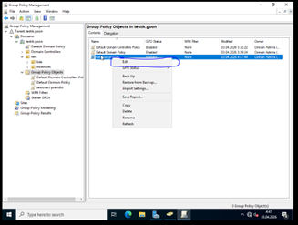
Zvolime si nejake pravidlo, co rychle pozname, treba tohle
Tip: doporucuju si trochu s tim pak pohrat a vyzkouset si par dalsich
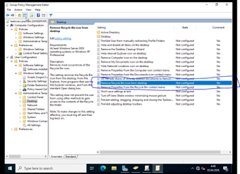
Dvojklikem na pravidlo pak otevreme detaily pravidla, kde muzeme pravidlo povolit
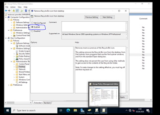
Pak pravidlo pretahneme do pozadovane OU
Pro spravne fungovani AD DS pak musime udelat par veci
Na WinServeru pak musi DNS byt IP adresa serveru. Pokud porad chceme pristup k internetu, jako alternativni DNS dame tu nasi venkovni.!!!!!!!
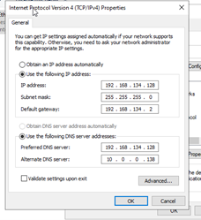
Pak v DNS Manageru vytvorime novou Forward Lookup Zone
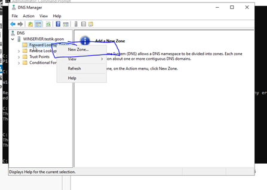
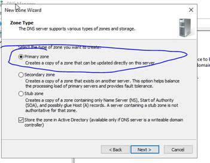
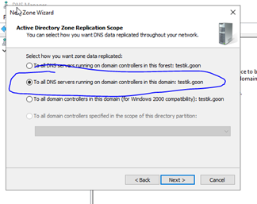
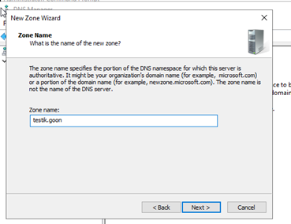
Abychom pripojili nas Win11 pocitac do domeny, musime ho v jeho nastaveni dat preferovanou DNS na IP server a pridat do domeny
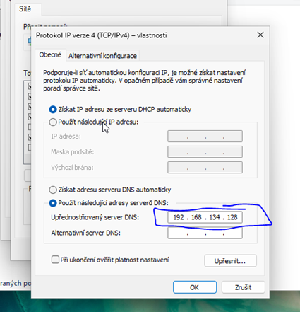
Mensi tip – pokud si chceme overit, jestli vse funguje a PC vidi do domeny, muzeme v cmd dat: ping testik.goon
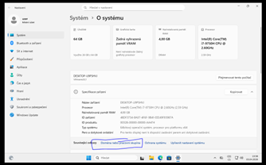
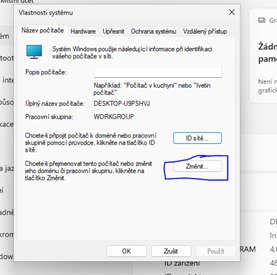
Restartujeme pocitac a prihlasime se do domeny pod uzivatelem, ktereho jsme vytvorili predtim (u me to je Sala Maleykoum)
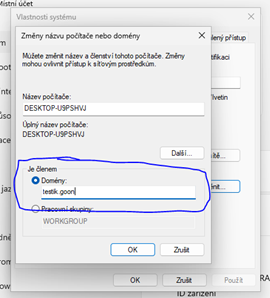
A jak muzeme videt, na desktopu nemame kos, jupi